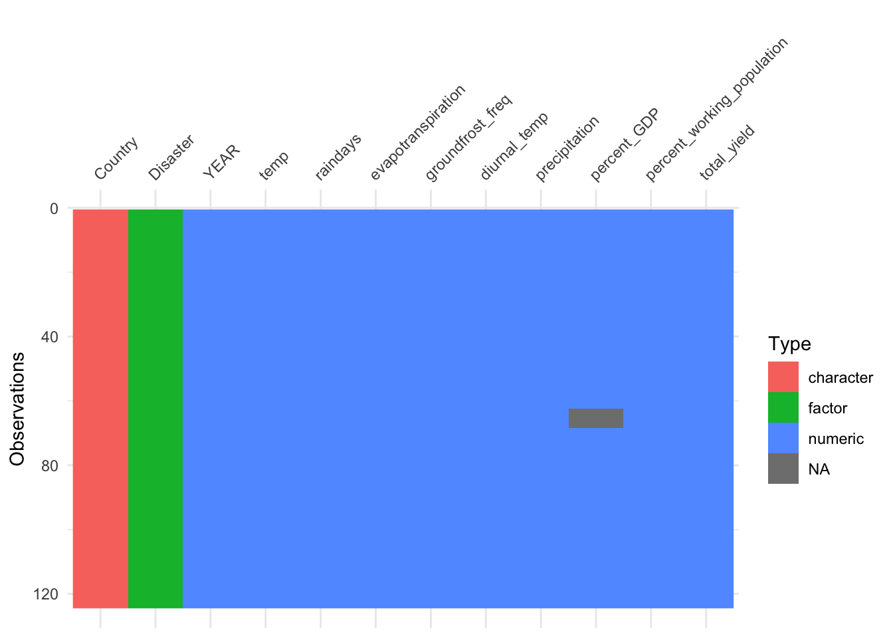
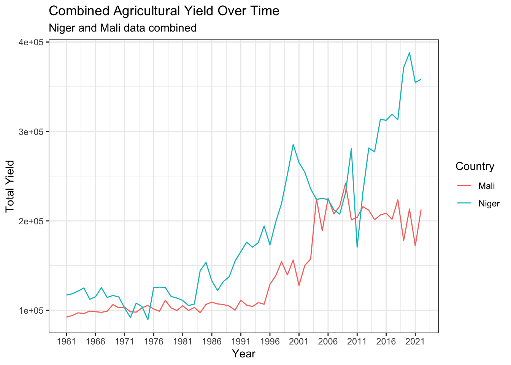
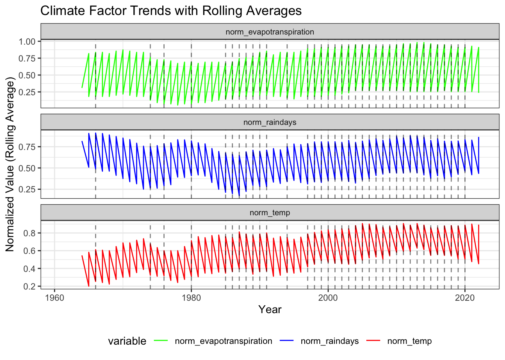
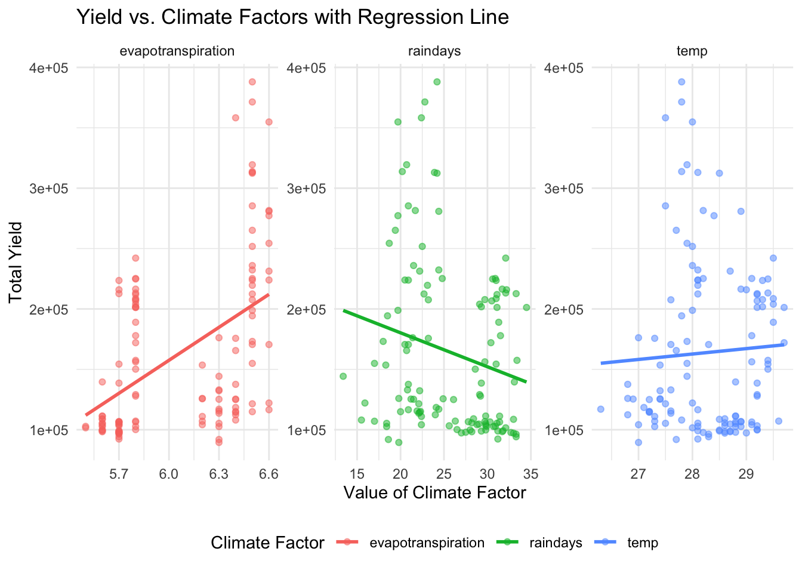
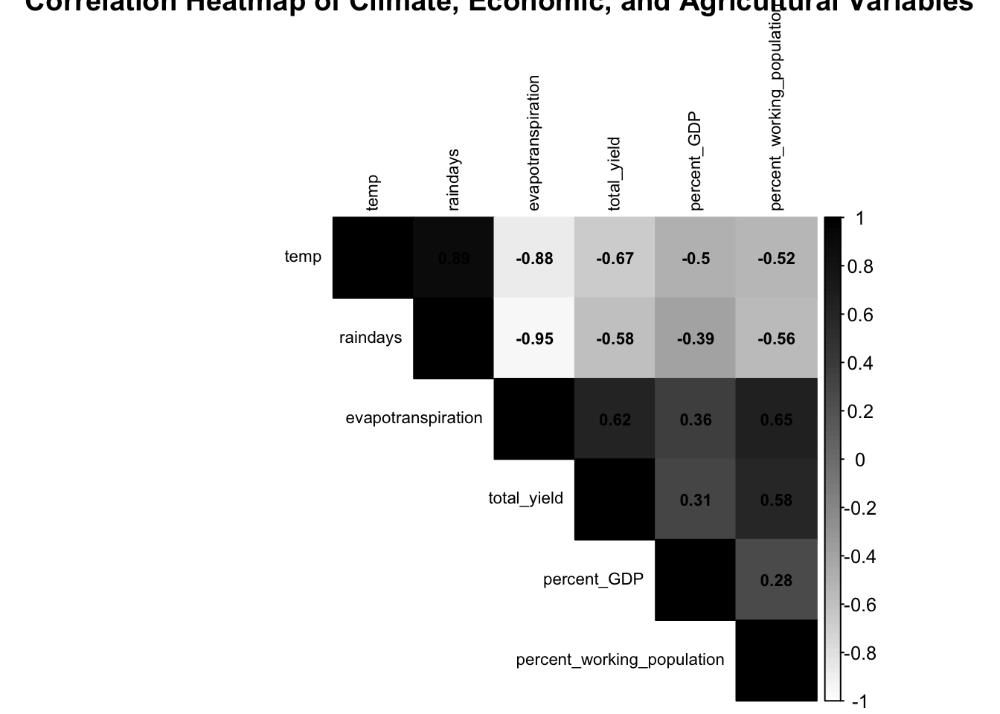
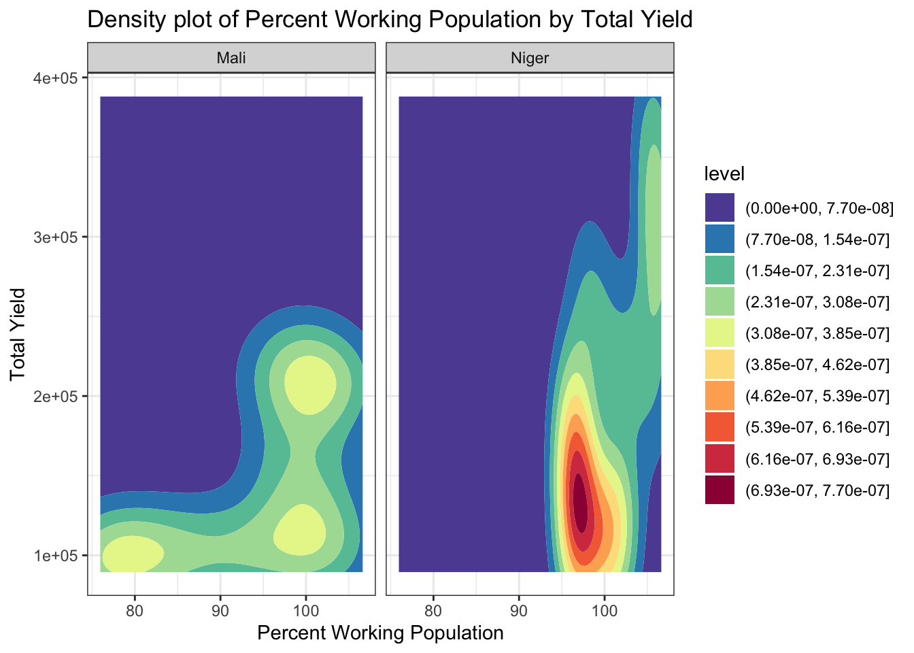
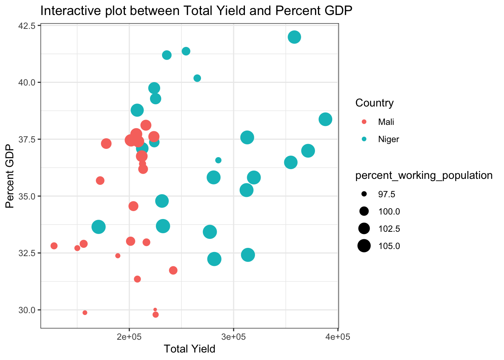
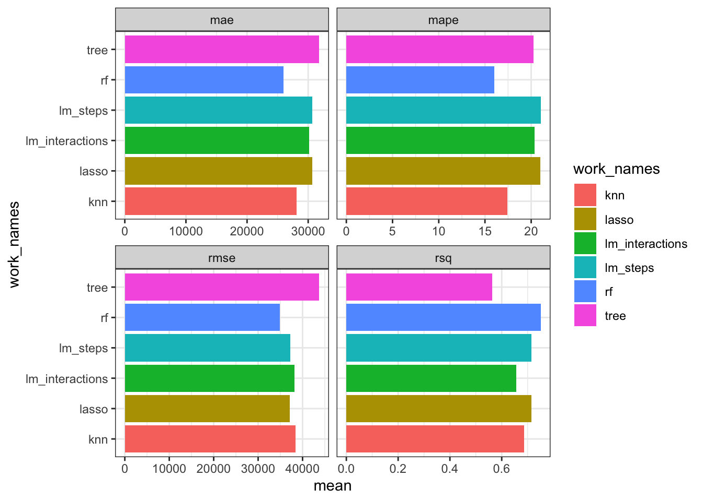
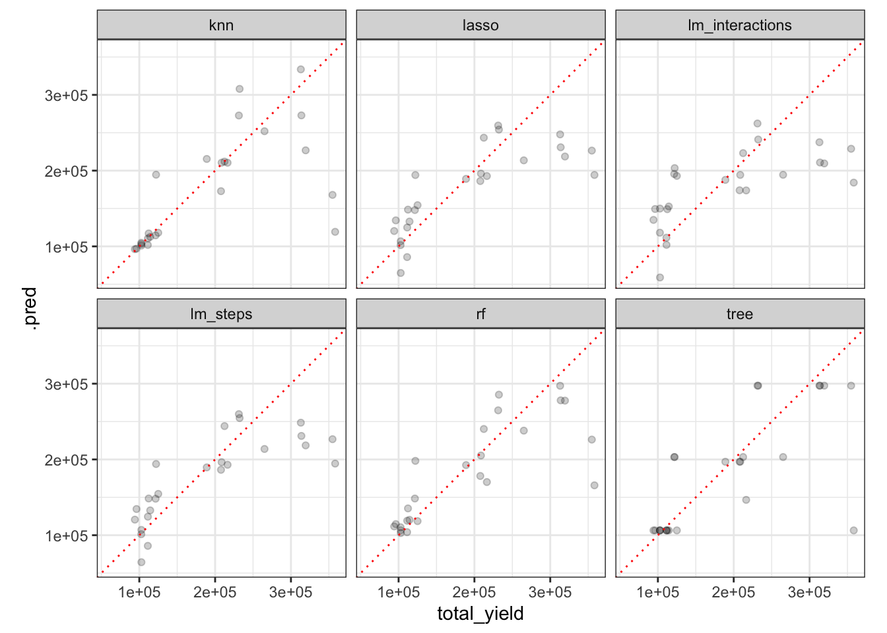
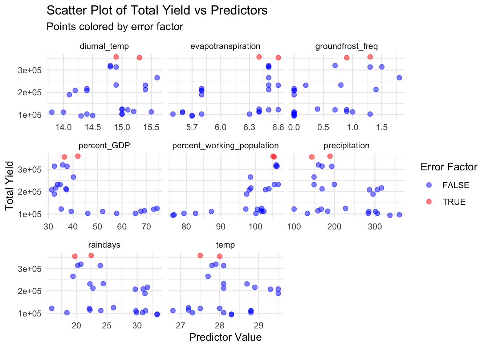

# Load 'readr' for data import and 'tidyr' for data tidying functions.
library(readr)
library(tidyr)Predicting the Impact of Climate Variability on the Productivity of Key Staple Crops in Niger
Abstract
This project seeks to develop predictive models aimed at forecasting the impact of climate variability on staple crop yields in Sahel Africa. As these crops are vital for Niger and Mali’s agricultural sector and the food security of its population, understanding their future productivity under changing climate conditions is paramount. Leveraging historical climate and agricultural data, the project aims to identify patterns and build models capable of projecting future crop yields under different climate scenarios. The outcomes of this research will contribute to enhancing agricultural policy by providing data insights for crafting farming strategies and policies. Additionally, it will aid in forecasting the potential impact of climate change on food security and livelihoods in the region, ultimately offering a pathway towards bolstering agricultural resilience and ensuring food security in Niger and Mali.
Introduction
Niger and Mali face significant challenges in sustaining agricultural productivity amidst climate variability and change. The agricultural sector serves as the backbone of Niger’s economy and plays a crucial role in ensuring food security for its population. However, the increasing unpredictability of rainfall patterns and rising temperatures pose substantial threats to the productivity and resilience of these crops.
Recognizing the urgent need to address these challenges, this project aims to develop predictive models to forecast the impact of climate variability on staple crop yields in Niger. By analyzing historical climate data, including temperature and rainfall, in conjunction with agricultural production data such as crop yields, the project seeks to identify patterns and build models capable of projecting future crop yields under various climate scenarios.
Overall, this project represents a critical step towards enhancing agricultural resilience and ensuring food security in Niger and Mali amidst the challenges posed by climate variability and change. By leveraging predictive modeling approaches, it offers a pathway for policymakers, researchers, and stakeholders to collaborate in addressing the complex and interconnected issues of climate change, agriculture, and food security in the region.
Data Description
Temp: annual mean temperature
Raindays: annual average rain days
Evapotranspiration: total water loss from both soil evaporation and plant transpiration annually.
Groundfrost_freq: Annual count of ground surface freezing occurrences.
Diurnal_temp: Daily temperature variation within a 24-hour period.
Precipitation: Annual accumulation of water in various forms, such as rain, snow, or hail, over a specified area.
Disaster: Indicates whether any climate-related disaster occurred in a given year. Assigned a value of 1 if a disaster occurred and 0 if not, covering a range of events such as droughts, infestations, earthquakes, or any other climate-related calamity.
Percent_GDP: Agriculture, forestry, and fishing, value added (% of GDP)
Percent_working_population: Age dependency ratio (% of working-age population)
Total_yield: aggregated annual agricultural yield of staple crops
Data Cleaning
Tidying of Niger Climate Data
In preparing the Niger data for analysis, the initial step was to convert the climate data from its raw form into a tidy format. The raw data, stored in a “.per” file, followed a fixed-width format as specified by the header “format = (i5,17f8.1)”. This format indicated that each line of data contained one 5-character wide integer (the year) and seventeen 8-character wide floating-point numbers (monthly and annual values, with one decimal place).
The `read.fwf` function in R was chosen for its ability to read fixed-width files. This function requires a ‘widths’ argument, which we constructed based on the file’s format specification: a width of 5 for the ‘YEAR’ and widths of 8 for each precipitation value. Only the ‘YEAR’ and ‘ANN’ columns were needed, so the data was subset to these columns after reading.
By executing these steps, we transformed the raw climate data into a tidy data frame with clear, concise columns suitable for subsequent analysis.
# custom function for tidying climate data
read_climate_data <- function(file_path, skip_lines, col_name) {
# Read the specified columns from the file
data <- read.fwf(file_path,
widths = c(5, rep(8, 17)),
skip = skip_lines,
col.names = c('YEAR', rep(NA, 16), 'ANN'),
na.strings = '-999.0')
# Rename the 'ANN' column to the specified climate variable name
names(data)[names(data) == 'ANN'] <- col_name
# Return the dataframe with only 'YEAR' and the specified climate variable
return(data[c('YEAR', col_name)])
}To streamline the process of tidying multiple climate data files, a custom R function was created. This function automates the extraction of only the ‘YEAR’ and ‘ANN’ columns from each file, which share a consistent format. By defining the column widths once and applying them across all files, the function efficiently transforms the data into a tidy format, ready for analysis. This approach saves time and ensures consistency in the handling of various datasets.
tmin_path <- "/Users/victoriaa/Desktop/STAT5125/Project Data/Renamed/crucy.v4.07.1901.2022.Niger.tmn.per"
tmax_path <- "/Users/victoriaa/Desktop/STAT5125/Project Data/Renamed/crucy.v4.07.1901.2022.Niger.tmx.per"
tmp_path <- "/Users/victoriaa/Desktop/STAT5125/Project Data/Renamed/final_project/crucy.v4.07.1901.2022.Niger.tmp.per"
wet_path <- "/Users/victoriaa/Desktop/STAT5125/Project Data/Renamed/final_project/crucy.v4.07.1901.2022.Niger.wet.per"
vap_path <- "/Users/victoriaa/Desktop/STAT5125/Project Data/Renamed/crucy.v4.07.1901.2022.Niger.vap.per"
pet_path <- "/Users/victoriaa/Desktop/STAT5125/Project Data/Renamed/crucy.v4.07.1901.2022.Niger.pet.per"
frs_path <- "/Users/victoriaa/Desktop/STAT5125/Project Data/Renamed/final_project/crucy.v4.07.1901.2022.Niger.frs.per"
dtr_path <- "/Users/victoriaa/Desktop/STAT5125/Project Data/Renamed/final_project/crucy.v4.07.1901.2022.Niger.dtr.per"
pre_path <- "/Users/victoriaa/Desktop/STAT5125/Project Data/Renamed/final_project/crucy.v4.07.1901.2022.Niger.pre.per"
min_temp <- read_climate_data(tmin_path, skip_lines = 4, col_name ="min_temp")
max_temp <- read_climate_data(tmax_path, skip_lines = 4, col_name = "max_temp")
temp <- read_climate_data(tmp_path, skip_lines = 4, col_name = "temp")
raindays <- read_climate_data(wet_path, skip_lines = 4, col_name = "raindays")
vapor_pressure <- read_climate_data(vap_path, skip_lines = 4, col_name = "vapor_pressure")
evapotranspiration <- read_climate_data(pet_path, skip_lines = 4, col_name = "evapotranspiration")
groundfrost_freq <- read_climate_data(frs_path, skip_lines = 4, col_name = "groundfrost_freq")
diurnal_temp <- read_climate_data(dtr_path, skip_lines = 4, col_name = "diurnal_temp")
precipitation <- read_climate_data(pre_path, skip_lines = 4, col_name = "precipitation")We construct a unified climate dataset by sequentially joining multiple data frames, each holding different climate metrics keyed by ‘YEAR’. The ‘reduce’ function streamlines this merge, resulting in a singular, comprehensive data frame, which we preview with ‘head(climate_data)’.
library(purrr)
# Put all data frames in a list
climate_data_list <- list(min_temp, max_temp, temp, raindays, vapor_pressure, evapotranspiration, groundfrost_freq, diurnal_temp, precipitation)
# Use reduce from the purrr package to join all data frames
climate_data <- reduce(climate_data_list, dplyr::left_join, by = "YEAR")
head(climate_data) YEAR min_temp max_temp temp raindays vapor_pressure evapotranspiration
1 1901 19.9 34.7 27.3 20.6 13.4 6.4
2 1902 19.9 34.8 27.3 20.6 13.4 6.4
3 1903 20.0 34.8 27.4 20.6 13.5 6.4
4 1904 20.1 34.7 27.4 20.6 13.5 6.4
5 1905 19.8 34.6 27.2 21.2 13.4 6.4
6 1906 20.0 35.0 27.5 21.0 13.5 6.5
groundfrost_freq diurnal_temp precipitation
1 0.7 14.8 153.9
2 0.7 14.8 153.8
3 0.7 14.8 153.7
4 0.7 14.7 154.0
5 0.7 14.8 156.3
6 0.7 15.0 165.3Tidying Niger Historical Extreme Climate Disasters Data
In preparing the disaster data for analysis, we’re streamlining the information to focus exclusively on Niger from 1901 onwards. We’ll extract the year from the disaster number and keep track of the type of disaster, if any. The aim is to build a clear timeline of years with notable climate events, identifying the presence of critical climate-related disasters such as floods or droughts. This will be distilled into a binary indicator, setting the stage for a focused study on the impacts of climate variability over time.
library(readxl)
library(dplyr)
library(tibble)
# Load disaster data from the specified Excel file
disasters_df <- read_excel("/Users/victoriaa/Desktop/STAT5125/Project Data/Renamed/final_project/extreme_climate_data.xlsx")
# Filter data for Niger, extract the year from 'DisNo.', and select relevant columns
niger_disasters_df <- disasters_df |>
filter(Country == "Niger") |>
dplyr::mutate(Year = as.numeric(substr(`DisNo.`, 1, 4))) |>
filter(!is.na(Year) & Year >= 1901) |>
dplyr::select(Year, disaster_type = `Disaster Type`)
# Clean 'disaster_type' by replacing empty strings with NA
niger_disasters_df <- niger_disasters_df |>
mutate(disaster_type = ifelse(disaster_type == "", NA, disaster_type))
# Generate a tibble of years from 1901 to the most recent year in the Niger data
full_years <- tibble(Year = 1901:max(as.numeric(niger_disasters_df$Year)))
# Join the complete year sequence with disaster data and sort by year
niger_disasters_complete <- full_years |>
left_join(niger_disasters_df, by = "Year") |>
arrange(Year)
# Display the complete data frame with all years and disaster types
head(niger_disasters_complete)# A tibble: 6 × 2
Year disaster_type
<dbl> <chr>
1 1901 <NA>
2 1902 <NA>
3 1903 Drought
4 1904 <NA>
5 1905 <NA>
6 1906 Drought # Create a binary 'Disaster' column where Yes indicates the presence of Flood, Drought, Infestation, or Storm
niger_disasters_complete <- niger_disasters_complete |>
mutate(Disaster = ifelse(disaster_type %in% c("Flood", "Drought", "Infestation", "Storm"), "Yes", "No")) |>
group_by(Year) |>
summarize(Disaster = ifelse(any(Disaster == "Yes"), "Yes", "No"))
# Rename the 'Year' column in niger_disasters_complete to 'YEAR'
niger_disasters_complete <- niger_disasters_complete |>
rename(YEAR = Year)
# Now join with climate_data
climate_data <- left_join(climate_data, niger_disasters_complete, by = "YEAR")
head(climate_data) YEAR min_temp max_temp temp raindays vapor_pressure evapotranspiration
1 1901 19.9 34.7 27.3 20.6 13.4 6.4
2 1902 19.9 34.8 27.3 20.6 13.4 6.4
3 1903 20.0 34.8 27.4 20.6 13.5 6.4
4 1904 20.1 34.7 27.4 20.6 13.5 6.4
5 1905 19.8 34.6 27.2 21.2 13.4 6.4
6 1906 20.0 35.0 27.5 21.0 13.5 6.5
groundfrost_freq diurnal_temp precipitation Disaster
1 0.7 14.8 153.9 No
2 0.7 14.8 153.8 No
3 0.7 14.8 153.7 Yes
4 0.7 14.7 154.0 No
5 0.7 14.8 156.3 No
6 0.7 15.0 165.3 YesTidying of Agricultural Contribution to GDP Data
In this code block, we load a dataset that captures the agricultural sector’s contribution to Niger’s GDP as a percentage over various years. We clean and reformat this data by focusing on Niger and converting it from a wide format (where each column represents a year) to a long format where each row represents a year and its corresponding GDP percentage. This newly structured data is then merged with the existing climate dataset, enriching it with economic context that may help in analyzing trends and correlations between agricultural economic performance, climate variables and agricultural yield.
# Load GDP data from a CSV file, skipping the first four rows
gdp <- read.csv("/Users/victoriaa/Desktop/STAT5125/Project Data/Renamed/final_project/Percent_GDP.csv", skip = 4)
# Filter for Niger's GDP data and remove unnecessary columns
niger_gdp <- gdp |>
filter(Country.Code == "NER") |>
select(!c(Country.Name, Indicator.Name, Indicator.Code))
# Reshape the data from wide to long format, renaming and parsing years
tidy_gdp <- niger_gdp |>
pivot_longer(cols = !Country.Code,
names_to = "YEAR",
values_to = "percent_GDP") |>
mutate(YEAR = parse_number(YEAR)) |>
select(YEAR, percent_GDP)
# Merge the GDP data with the existing climate data on the 'YEAR' column
climate_data <- left_join(climate_data, tidy_gdp, by = "YEAR")
# Display the updated climate data with GDP information
climate_dataTidying of Percent Working Population Data
Here, we handle the integration of demographic data, specifically the percentage of the working-age population in Niger, into our existing climate dataset. Starting by loading and cleaning the data to focus only on relevant metrics, it then transforms the dataset into a long format, aligning the demographic data with corresponding years. This restructuring makes it easier to merge with our climate data.
# Load data detailing the percentage of working-age population in Niger over the years, skipping the first four rows.
percent_pop <- read.csv("/Users/victoriaa/Desktop/STAT5125/Project Data/Renamed/final_project/percent_working_age_population.csv", skip = 4)
# Filter the dataset for records related to Niger, excluding columns that are not relevant to our analysis.
niger_percent_working_pop <- percent_pop |>
filter(Country.Code == "NER") |>
select(!c(Country.Name, Indicator.Name, Indicator.Code))
# Reshape the data from wide to long format to handle it more easily, assigning 'YEAR' to the years and 'percent_working_population' to the values.
tidy_pop <- niger_percent_working_pop |>
pivot_longer(cols = !Country.Code,
names_to = "YEAR",
values_to = "percent_working_population") |>
mutate(YEAR = parse_number(YEAR)) |>
select(YEAR, percent_working_population)
# Show the first few rows of the processed data to ensure everything is correct.
head(tidy_pop)
# Merge this demographic data with the existing climate dataset, matching records by the 'YEAR'.
climate_data <- left_join(climate_data, tidy_pop, by = "YEAR")
# Display the merged dataset to see the integrated climate and demographic data.
climate_dataTidying of Agricultural Yield Data
In this code, we process historical yield data for staple crops in Niger to capture annual agricultural productivity trends. By selecting only ‘Yield’ elements and summarizing these into annual totals, we construct a dataset that focuses on the total agricultural output per year. This data is then merged with an existing climate dataset. By integrating these agricultural yields, we enhance our climate dataset, enabling analyses of how climate variables might correlate with or impact agricultural productivity over time. This comprehensive dataset provides a foundation for exploring interactions between climate conditions and agricultural outputs in Niger.
# Load historical agricultural yield data for staple crops in Niger.
Yield_data <- read.csv("/Users/victoriaa/Desktop/STAT5125/Project Data/Renamed/final_project/agricultural_yield_Niger.csv")
# Filter for 'Yield' records, aggregate by year, and sum values to get total yield, removing NA values in the process.
crop_yield <- Yield_data |>
filter(Element == "Yield") |>
group_by(Year) |>
summarize(total_yield = sum(Value, na.rm = TRUE)) |>
select(Year, total_yield) |>
rename(YEAR = Year)
# Display the first few rows of the yearly total crop yield data to check for correctness.
head(crop_yield)
# Merge the total crop yield data with the existing climate dataset, matching records by 'YEAR'.
climate_data <- left_join(climate_data, crop_yield, by = "YEAR")
# Display the updated climate dataset that now includes agricultural yield data.
climate_data# Filter the merged climate data to start from 1961 due to the availability of economic and yield data starting mid-century.
climate_data_clean <- climate_data |>
filter(YEAR >= 1961) |>
mutate(Country = "Niger", # Add a column for country name, placing it before 'total_yield'
.before = total_yield) |>
select(!c(min_temp, max_temp, vapor_pressure)) # Exclude certain climate variables not needed for further analysis
# Convert the 'Disaster' column to numeric where 'Yes' becomes 1, and 'No' or NA becomes 0.
climate_data_clean$Disaster <- as.numeric(climate_data_clean$Disaster == "Yes")
# Transform the 'Disaster' numeric column into a factor for categorical analysis.
climate_data_clean$Disaster <- factor(climate_data_clean$Disaster, levels = c(0, 1))
# Display the cleaned and filtered climate data.
head(climate_data_clean) YEAR temp raindays evapotranspiration groundfrost_freq diurnal_temp
1 1961 26.3 24.4 6.3 2.0 14.9
2 1962 27.1 24.1 6.4 1.2 15.1
3 1963 27.5 22.1 6.5 0.7 15.1
4 1964 27.2 26.1 6.4 0.4 15.0
5 1965 26.8 24.0 6.4 1.0 15.5
6 1966 27.2 22.3 6.4 1.3 15.2
precipitation Disaster percent_GDP percent_working_population Country
1 213.8 0 73.88717 99.77513 Niger
2 190.0 0 75.99761 99.92210 Niger
3 167.2 0 72.94795 100.59364 Niger
4 227.2 0 74.32404 101.84330 Niger
5 183.2 0 67.70392 102.46912 Niger
6 178.2 1 66.87473 102.25243 Niger
total_yield
1 117008
2 118428
3 121495
4 124997
5 112383
6 115138When consolidating our comprehensive climate dataset, we encountered a temporal alignment issue: the climate variables began in 1900, while key economic data like percent GDP, working population percentage, and total agricultural yield only started around mid-century. To ensure data consistency and reliability in our analyses, we chose to filter the dataset to start from 1961. This decision, while resulting in the loss of half the original observations, was necessary to maintain a uniform timeline across all variables.
The necessity to filter our dataset to start from 1961 significantly impacted our study’s scope, particularly our objective of analyzing how climate variability affects agricultural productivity. With the data reduced to just 62 rows, the limitations became apparent: such a small sample size restricts the power and reliability of any predictive modeling, potentially skewing insights and undermining the validity of conclusions.
Initially, we considered imputing missing values to reclaim some of the lost data. However, with approximately 40% of our data missing and the issues spanning multiple variables, not just one, this approach risked introducing substantial bias. The complexity of the missingness pattern made reliable imputation unfeasible.
To address these challenges and bolster our analysis, we expanded the geographical scope of our study to include data from Mali, a neighboring country with similar climatic conditions. Integrating the Mali dataset not only enriched our data pool but also provided a broader perspective on the Sahel region’s climate and agricultural patterns. This enhancement allowed us to extend our dataset, enabling more robust and insightful analysis and facilitating the development of a more reliable model for predicting future agricultural yields across the region. This strategic adjustment aims to overcome the limitations posed by the reduced dataset and ensure our research remains both relevant and impactful.
To maintain consistency in our analysis, the same data tidying processes applied to the Niger dataset were also employed for the Mali dataset. Given that the variables and format across both datasets are identical, this ensured a streamlined and uniform approach. We carried out the exact same steps: filtering relevant data, transforming formats where necessary, and summarizing key variables. This meticulous preparation allowed us to seamlessly append the Mali data to our existing dataset. This integration strengthens our dataset, providing a more comprehensive foundation for our predictive modeling and subsequent analysis.
Tidying of Mali Climate Data
tmp_path <- "/Users/victoriaa/Desktop/STAT5125/Project Data/Renamed/final_project/crucy.v4.07.1901.2022.Mali.tmp.per"
wet_path <- "/Users/victoriaa/Desktop/STAT5125/Project Data/Renamed/final_project/crucy.v4.07.1901.2022.Mali.wet.per"
pet_path <- "/Users/victoriaa/Desktop/STAT5125/Project Data/Renamed/final_project/crucy.v4.07.1901.2022.Mali.pet.per"
frs_path <- "/Users/victoriaa/Desktop/STAT5125/Project Data/Renamed/final_project/crucy.v4.07.1901.2022.Mali.frs.per"
dtr_path <- "/Users/victoriaa/Desktop/STAT5125/Project Data/Renamed/final_project/crucy.v4.07.1901.2022.Mali.dtr.per"
pre_path <- "/Users/victoriaa/Desktop/STAT5125/Project Data/Renamed/final_project/crucy.v4.07.1901.2022.Mali.pre.per"
temp <- read_climate_data(tmp_path, skip_lines = 4, col_name = "temp")
raindays <- read_climate_data(wet_path, skip_lines = 4, col_name = "raindays")
evapotranspiration <- read_climate_data(pet_path, skip_lines = 4, col_name = "evapotranspiration")
groundfrost_freq <- read_climate_data(frs_path, skip_lines = 4, col_name = "groundfrost_freq")
diurnal_temp <- read_climate_data(dtr_path, skip_lines = 4, col_name = "diurnal_temp")
precipitation <- read_climate_data(pre_path, skip_lines = 4, col_name = "precipitation")Tidying of Historical Climate Disaster Data
library(readxl)
library(dplyr)
library(tibble)
disasters_df <- read_excel("/Users/victoriaa/Desktop/STAT5125/Project Data/Renamed/final_project/extreme_climate_data.xlsx")
mali_disasters_df <- disasters_df |>
filter(Country == "Mali") |>
dplyr::mutate(Year = as.numeric(substr(`DisNo.`, 1, 4))) |>
filter(!is.na(Year) & Year >= 1901) |>
dplyr::select(Year, disaster_type = `Disaster Type`)
mali_disasters_df <- mali_disasters_df |>
mutate(disaster_type = ifelse(disaster_type == "", NA, disaster_type))
# Create a complete sequence of years from 1901 to the most recent year in the data
full_years <- tibble(Year = 1901:max(as.numeric(mali_disasters_df$Year)))
mali_disasters_complete <- full_years |>
left_join(mali_disasters_df, by = "Year") |>
arrange(Year)
mali_disasters_complete <- mali_disasters_complete |>
mutate(Disaster = ifelse(!is.na(disaster_type) & disaster_type %in% c("Flood", "Drought", "Infestation", "Storm"), 1, 0)) |>
group_by(Year) |>
summarize(Disaster = max(Disaster, na.rm = TRUE))
# Rename the 'Year' column in mali_disasters_complete to 'YEAR'
mali_disasters_complete <- mali_disasters_complete |>
rename(YEAR = Year)
head(mali_disasters_complete)
# Now join with climate_data
mali_climate_data <- left_join(mali_climate_data, mali_disasters_complete, by = "YEAR")
mali_climate_data <- mali_climate_data |>
mutate(Disaster = replace_na(Disaster, 0))
head(mali_climate_data)Mali Percent Agricultural Contribution to GDP Data
gdp<-read.csv("/Users/victoriaa/Desktop/STAT5125/Project Data/Renamed/final_project/Percent_GDP_Mali.csv", skip = 4)
mali_gdp <- gdp |>
filter(Country.Code == "MLI") |>
select(!c(Country.Name, Indicator.Name, Indicator.Code))
tidy_mali <- mali_gdp |>
pivot_longer(cols = !Country.Code,
names_to = "YEAR",
values_to = "percent_GDP") |>
mutate(YEAR = parse_number(YEAR)) |>
select(YEAR, percent_GDP) Warning: There was 1 warning in `mutate()`.
ℹ In argument: `YEAR = parse_number(YEAR)`.
Caused by warning:
! 1 parsing failure.
row col expected actual
65 -- a number Xhead(tidy_mali)
mali_climate_data <- left_join(mali_climate_data, tidy_mali, by = "YEAR")
mali_climate_dataMali Percent Working Age Population Data
percent_pop <- read.csv("/Users/victoriaa/Desktop/STAT5125/Project Data/Renamed/final_project/percent_working_age_population_mali.csv", skip = 4)
mali_percent_working_pop <- percent_pop |>
filter(Country.Code == "MLI") |>
select(!c(Country.Name, Indicator.Name, Indicator.Code))
tidy_pop <- mali_percent_working_pop |>
pivot_longer(cols = !Country.Code,
names_to = "YEAR",
values_to = "percent_working_population") |>
mutate(YEAR = parse_number(YEAR)) |>
select(YEAR, percent_working_population)
head(tidy_pop)
mali_climate_data <- left_join(mali_climate_data, tidy_pop, by = "YEAR")
mali_climate_dataMali Historical Agricultural Yield
Yield_data <- read.csv("/Users/victoriaa/Desktop/STAT5125/Project Data/Renamed/final_project/agricultural_yield_Mali.csv")
crop_yield <- Yield_data |>
filter(Element == "Yield") |>
group_by(Year) |>
summarize(total_yield = sum(Value, na.rm = TRUE)) |>
select(Year, total_yield) |>
rename(YEAR = Year)
head(crop_yield)
mali_climate_data <- left_join(mali_climate_data, crop_yield, by = "YEAR")
mali_climate_datamali_climate_data_clean <- mali_climate_data |>
filter(YEAR >= 1961) |>
mutate(Country = "Mali",
.before = total_yield)
mali_climate_data_cleanFor the Mali dataset, we applied the same filtering criteria as with the Niger data, starting our analysis from 1961. This alignment was necessary because, similar to Niger, Mali’s data on percent GDP, percent working population, and total yield also begin around mid-century. Imputing data for the earlier missing years was deemed impractical due to the extensive nature of the missingness and the potential biases it could introduce. By filtering the Mali dataset to start in 1961 and integrating it with the Niger dataset, we successfully expanded our pool of observations. This broader dataset enhances our ability to conduct a more robust and comprehensive analysis across the Sahel region, significantly strengthening our research framework.
# Combine the cleaned climate data from Niger and Mali into a single dataset
combined_df <- rbind(climate_data_clean, mali_climate_data_clean)
# Process the 'Disaster' column by converting from factor to numeric, replacing NAs with 0, and optionally converting back to factor
combined_df <- combined_df |>
mutate(Disaster = as.numeric(as.character(Disaster)), # Convert factor to character, then to numeric to handle NAs
Disaster = ifelse(is.na(Disaster), 0, Disaster), # Replace any NAs with 0 for consistency
Disaster = factor(Disaster)) # Convert back to factor for categorical analysis
head(combined_df) YEAR temp raindays evapotranspiration groundfrost_freq diurnal_temp
1 1961 26.3 24.4 6.3 2.0 14.9
2 1962 27.1 24.1 6.4 1.2 15.1
3 1963 27.5 22.1 6.5 0.7 15.1
4 1964 27.2 26.1 6.4 0.4 15.0
5 1965 26.8 24.0 6.4 1.0 15.5
6 1966 27.2 22.3 6.4 1.3 15.2
precipitation Disaster percent_GDP percent_working_population Country
1 213.8 0 73.88717 99.77513 Niger
2 190.0 0 75.99761 99.92210 Niger
3 167.2 0 72.94795 100.59364 Niger
4 227.2 0 74.32404 101.84330 Niger
5 183.2 0 67.70392 102.46912 Niger
6 178.2 1 66.87473 102.25243 Niger
total_yield
1 117008
2 118428
3 121495
4 124997
5 112383
6 115138write.csv(combined_df, file ="final_clean_data.csv")Missing Data Visualization
library(visdat)
combined_df |>
vis_dat()
Data Exploration
library(tidyverse)── Attaching core tidyverse packages ──────────────────────── tidyverse 2.0.0 ──
✔ forcats 1.0.0 ✔ lubridate 1.9.3
✔ ggplot2 3.4.3 ✔ stringr 1.5.1
── Conflicts ────────────────────────────────────────── tidyverse_conflicts() ──
✖ dplyr::filter() masks stats::filter()
✖ dplyr::lag() masks stats::lag()
ℹ Use the conflicted package (<http://conflicted.r-lib.org/>) to force all conflicts to become errorslibrary(scales)
Attaching package: 'scales'
The following object is masked from 'package:purrr':
discard
The following object is masked from 'package:readr':
col_factortheme_set(theme_bw())
# Create a line plot of agricultural yield over time for both Niger and Mali, with distinct colors for each country
combined_df |>
ggplot(aes(x = YEAR, y = total_yield, group = Country, color = Country)) + # Map aesthetics to YEAR and total_yield, grouping and coloring by Country
geom_line() + # Add line geometries to represent trends
labs(title = "Combined Agricultural Yield Over Time", # Set the plot title and subtitles
subtitle = "Niger and Mali data combined",
x = "Year",
y = "Total Yield",
color = "Country") + # Legend title
scale_x_continuous(breaks = seq(min(combined_df$YEAR), max(combined_df$YEAR), by = 5)) # Define x-axis breaks every 5 years for readability
In the provided plot, we observe the agricultural yields of Niger and Mali from 1961 onwards. Both countries exhibit an overall upward trend in total yield, reflecting agricultural growth over the decades. Mali’s yields show a steadier, gradual increase, while Niger displays more variability, with sharper inclines and declines. Notably, in recent years, Niger’s yield has seen a significant rise, surpassing Mali’s.
The plot suggests that, while both countries’ agriculture sectors are growing, Niger’s growth has been more pronounced in recent times, possibly due to different agricultural policies, technological adoption, or climatic conditions that may be more favorable to crop production.
Bar Graph for Disaster Frequency: Display the frequency of disasters over the years in a bar graph, overlaying this with a line that shows the trend in crop yield or GDP to suggest the impact of these events.
library(ggplot2)
library(dplyr)
library(zoo)
library(tidyr)
# Normalize the climate data to a 0-1 range for better comparison
combined_df <- combined_df |>
mutate(across(c(temp, raindays, evapotranspiration),
~(. - min(.)) / (max(.) - min(.)),
.names = "norm_{.col}"))
# Calculate rolling averages for the normalized data
combined_df <- combined_df |>
mutate(across(starts_with("norm_"),
~rollapply(., width = 5, FUN = mean, na.rm = TRUE, fill = NA, align = 'right')))
# Pivot to longer format for plotting
climate_long <- combined_df |>
pivot_longer(cols = starts_with("norm_"), names_to = "variable", values_to = "value")
# Create the plot with rolling averages
climate_rolling_avg_plot <- ggplot(climate_long, aes(x = YEAR,
y = value,
color = variable)) +
geom_line() +
facet_wrap(~ variable, scales = "free_y", ncol = 1) +
labs(title = "Climate Factor Trends with Rolling Averages",
y = "Normalized Value (Rolling Average)", x = "Year") +
scale_color_manual(values = c("norm_temp" = "red",
"norm_raindays" = "blue",
"norm_evapotranspiration" = "green")) +
theme(legend.position = "bottom")
# Identify disaster years
disaster_years <- combined_df |>
filter(Disaster == 1) |>
distinct(YEAR)
# Add a transparent layer for disaster years
climate_rolling_avg_plot <- climate_rolling_avg_plot +
geom_vline(data = disaster_years, aes(xintercept = YEAR),
linetype = "dashed",
color = "black",
alpha = 0.5) +
theme(strip.text.x = element_text(size = 8))
# Print the plot
print(climate_rolling_avg_plot)
The plot presented in the above plot reveals several intriguing patterns in climate factors that might influence agricultural productivity in Niger and Mali. Notably, the temperature shows a subtle but noticeable upward trajectory over the years, hinting at a gradual increase in average temperatures. This could suggest a long-term warming trend, which is consistent with global patterns of climate change and may have profound impacts on regional agriculture, water resources, and ecosystems. In contrast, raindays and evapotranspiration display significant inter-annual variability without a clear long-term trend, reflecting the complexity of precipitation patterns and moisture loss due to factors like evaporation and plant transpiration. The years marked by climate disasters do not immediately correlate with anomalies in the climate data, suggesting that disasters may be linked to extreme, rather than average, conditions or might be driven by additional variables not displayed in the data.
# Scatter plot of total yield versus various climate factors with linear regression lines
yield_climate_scatter <- combined_df |>
gather(key = "ClimateFactor", value = "Value", temp, raindays, evapotranspiration) |>
ggplot(aes(x = Value, y = total_yield)) +
geom_point(aes(color = ClimateFactor), alpha = 0.5, size = 1.5) + # Plot points with semi-transparency for overlap, colored by climate factor
geom_smooth(method = "lm", se = FALSE, aes(color = ClimateFactor), linewidth = 1) + # Add linear regression lines without standard error
facet_wrap(~ClimateFactor, scales = "free") + # Create separate plots for each climate factor with their own scales
theme_minimal() + # Use a minimal theme for a clean look
labs(title = "Yield vs. Climate Factors with Regression Line", # Add plot title and axis labels
y = "Total Yield",
x = "Value of Climate Factor",
color = "Climate Factor") +
theme(legend.position = "bottom") # Position the legend at the bottom
# Output the plot
print(yield_climate_scatter)
The above plot presents a compelling visualization of how total agricultural yield correlates with several climate variables, which are critical in understanding the agro-climatic dynamics of Niger and Mali. A positive correlation is observed between evapotranspiration and yield, suggesting that conditions leading to higher evapotranspiration, possibly indicating sufficient heat and potential for plant growth, may be beneficial for crop productivity. Conversely, an increased number of raindays seems to inversely affect the yield, potentially highlighting the detrimental impacts of excessive rainfall, such as crop flooding or soil nutrient depletion. Temperature, however, exhibits a nearly flat trend, implying a complex or non-linear relationship with yield, which could indicate the presence of an optimal temperature range for crop growth, outside of which yield may be adversely affected. These relationships underscore the delicate balance between water availability and thermal conditions in securing agricultural output and highlight the importance of nuanced climate-smart agricultural practices in these regions.
library(corrplot)
library(dplyr)
# Filter the data for the last two decades
recent_data <- combined_df %>%
filter(YEAR >= 2000)
# Calculate the correlation matrix
correlation_matrix <- cor(recent_data[, c("temp", "raindays", "evapotranspiration", "total_yield", "percent_GDP", "percent_working_population")])
# Create the heatmap
corrplot(correlation_matrix, method = "color", type = "upper", tl.cex = 0.7,
addCoef.col = "black", # Add correlation coefficient values
number.cex = 0.7, # Font size for correlation coefficient values
tl.col = "black", # Color of variable names
col = colorRampPalette(c("#FFFFFF", "#7F7F7F", "#000000"))(100), # Color palette
title = "Correlation Heatmap of Climate, Economic, and Agricultural Variables")
The heatmap indicates a strong positive correlation between temperature and raindays. Temperature has a notably strong negative correlation with evapotranspiration. Evapotranspiration and raindays are strongly negatively correlated, implying that as one increases, the other tends to decrease. The climate variables have relatively low to moderate negative correlations with economic indicators, suggesting a more complex and less direct relationship between climate factors and economic conditions. Recognizing the limited strength of these correlations is important, as it highlights the need for a nuanced approach when analyzing the impact of climate on agricultural productivity and the economy.
library(RColorBrewer)
# Create a density plot to examine the distribution and relationship between percent working population and total yield
combined_df |>
ggplot(aes(x = percent_working_population, y = total_yield)) + # Set axes aesthetics
geom_density2d_filled(bins=10) + # Use 2D density estimation with 10 levels
scale_fill_brewer(palette = "Spectral", direction = -1) + # Apply a color palette for the fill with reversed Spectral colors
facet_wrap(~Country) + # Separate plots for each country for comparison
labs(x = "Percent Working Population", y = "Total Yield", title = "Density plot of Percent Working Population by Total Yield") # Add labels and title
The density plot displays the relationship between the percent working population and the total agricultural yield for Mali and Niger. For Niger, the plot shows a pronounced peak, suggesting that there’s a specific range of the working population where yield is maximized. The plot for Mali, however, presents three less distinct peaks, indicating that the relationship between the working population and yield isn’t as clear-cut in Mali as it is in Niger.
The key takeaway from this density plot is that in Niger, there seems to be a sweet spot where the size of the working population correlates with higher yield outcomes, which could imply a more direct impact of labor availability on agricultural productivity. In contrast, Mali’s agricultural yield appears to be influenced by factors beyond just the percent working population, as evidenced by the multiple clusters.
This visual analysis challenges the assumption that a larger workforce consistently translates to higher yields. Instead, it suggests that agricultural productivity may be more complex and possibly influenced by a combination of factors, which might include efficiency, technology, access to resources, and agricultural practices, alongside the workforce size.
library(plotly)
Attaching package: 'plotly'The following object is masked from 'package:ggplot2':
last_plotThe following object is masked from 'package:stats':
filterThe following object is masked from 'package:graphics':
layoutlibrary(gapminder)
# Create an interactive scatter plot visualizing the relationship between total yield and percent GDP from the year 2000 onwards, with point size representing percent working population and color distinguishing countries
p <- combined_df |>
filter(YEAR >= 2000) |>
ggplot(aes(total_yield, percent_GDP, size = percent_working_population, color = Country)) +
geom_point() + # Create scatter plot points
theme_bw() + # Apply a black and white theme for a clean look
labs(x = "Total Yield", y = "Percent GDP", title = "Interactive plot between Total Yield and Percent GDP") # Add labels and title
print(p)
The scatter plot visualizes the relationship between total agricultural yield and percent GDP, with the size of the points indicating the percent working population in agriculture for Mali and Niger. For both countries, there appears to be a positive trend, suggesting that as the total yield increases, the percent contribution of agriculture to GDP also rises. The distribution of points for Mali is more concentrated at lower yield levels, whereas Niger’s points are more spread out, indicating a broader range of yield. Larger point sizes are more prevalent for Niger, implying a larger portion of the working population is involved in agriculture compared to Mali. This plot underscores the positive association between agricultural productivity and its economic significance in these countries.
Data Modeling
After tidying our data, creating insightful visualizations, and understanding key trends, we’re now stepping into the regression modeling phase of our project. This stage is crucial as it helps us predict agricultural yields by analyzing a variety of climatic and socio-economic factors.
Here, we prepare our dataset for the regression model. We select specific variables from our combined dataset that we believe influence agricultural yield significantly. This selection includes both environmental factors like temperature and rainfall, and socio-economic factors like the impact of disasters and economic contributions from agriculture. With these variables, we aim to construct a model that can accurately forecast yield based on current and historical data patterns.
model_data <- combined_df |>
select(c(temp, raindays, evapotranspiration, groundfrost_freq, diurnal_temp, precipitation,
Disaster, percent_GDP, percent_working_population, total_yield))
model_data |>
glimpse()Rows: 124
Columns: 10
$ temp <dbl> 26.3, 27.1, 27.5, 27.2, 26.8, 27.2, 26.9, 2…
$ raindays <dbl> 24.4, 24.1, 22.1, 26.1, 24.0, 22.3, 21.2, 2…
$ evapotranspiration <dbl> 6.3, 6.4, 6.5, 6.4, 6.4, 6.4, 6.4, 6.4, 6.6…
$ groundfrost_freq <dbl> 2.0, 1.2, 0.7, 0.4, 1.0, 1.3, 1.5, 0.9, 0.6…
$ diurnal_temp <dbl> 14.9, 15.1, 15.1, 15.0, 15.5, 15.2, 14.7, 1…
$ precipitation <dbl> 213.8, 190.0, 167.2, 227.2, 183.2, 178.2, 1…
$ Disaster <fct> 0, 0, 0, 0, 0, 1, 0, 0, 0, 0, 0, 0, 0, 1, 0…
$ percent_GDP <dbl> 73.88717, 75.99761, 72.94795, 74.32404, 67.…
$ percent_working_population <dbl> 99.77513, 99.92210, 100.59364, 101.84330, 1…
$ total_yield <dbl> 117008, 118428, 121495, 124997, 112383, 115…We import the default settings for the tidymodels suite.
library(tidymodels)
tidymodels_prefer()
theme_set(theme_bw())We ensure consistency in our results by setting a seed, which allows for the reproducibility of our analysis. We then divide the data into training and testing sets, allocating 80% to training, to prepare for the development of our regression model.
set.seed(1)
data_split <- model_data |>
initial_split(prop=0.8)
data_split<Training/Testing/Total>
<99/25/124>Following the data split, we extract the training subset to develop our model and the testing subset to evaluate its performance later. This step is crucial for ensuring that our model learns to predict accurately while also being able to generalize well to new, unseen data.
train_data <- data_split |>
training()
test_data <- data_split |>
testing()Validation split
We reset the seed to ensure reproducibility before creating a 10-fold cross-validation setup with our training data. This method helps in assessing the model’s stability and performance by partitioning the data into 10 subsets, allowing the model to train and validate across multiple scenarios. We then check the class of our cross-validation object to confirm its structure.
set.seed(2)
vfold_set <- train_data |>
vfold_cv(v = 10)
vfold_set |>
class()[1] "vfold_cv" "rset" "tbl_df" "tbl" "data.frame"Defining Model Workflow
We initiate the modeling phase by defining several predictive models using different algorithms to evaluate their effectiveness in forecasting agricultural yields:
Linear Regression Model: We configure a simple linear regression model using the least squares method, setting it specifically for regression tasks.
Lasso Regression Model: We define a Lasso regression model, incorporating a penalty term to encourage sparsity and potentially improve model performance on predictors with significant multicollinearity.
Random Forest Model: A random forest regressor is set up using the ‘ranger’ package, chosen for its robustness and effectiveness in handling non-linear relationships without extensive hyperparameter tuning.
K-Nearest Neighbors Model: We configure a k-nearest neighbors model using the ‘kknn’ library, specifying three neighbors to predict outcomes based on the average response of the nearest data points, tailored for regression.
Decision Tree Regressor: We employ a decision tree model configured with the ‘rpart’ engine, favored for its interpretability and suitability in capturing non-linear patterns and interactions between variables without the need for extensive data scaling or transformation.
These diverse approaches allow us to compare methods and determine the most accurate and reliable model for predicting agricultural yields based on our dataset.
linear_fit <- linear_reg() |>
set_engine("lm") |>
set_mode("regression")
lasso_fit <- linear_reg(penalty = 0.01) |>
set_engine("glmnet") |>
set_mode("regression")
rf_fit <- rand_forest() |>
set_engine("ranger") |>
set_mode("regression")
library(kknn)
knn_fit <- nearest_neighbor() |>
set_mode("regression") |>
set_engine("kknn",
neighbors = 3)
tree_fit <- decision_tree() |>
set_engine("rpart") |>
set_mode("regression")We construct two distinct recipes for preprocessing our training data, both aimed at predicting total_yield, but tailored for different modeling needs:
Model Recipe 1:
Normalization: We apply normalization to all numeric predictors to ensure that the model isn’t biased by the scale of the variables, which enhances the stability and performance of the algorithms suited for such preprocessing, like linear and lasso regression.
Imputation: Median imputation is employed for the
percent_GDPvariable to address any missing values, which helps maintain robustness in our predictions by using a central tendency measure that is less affected by outliers.Encoding: We convert all nominal predictors into dummy variables, which allows our regression models to incorporate these categorical variables by treating them as a series of binary inputs.
Model Recipe 2 (Specifically for Decision Tree):
Imputation: As with the first recipe, median imputation for
percent_GDPaddresses missing data, essential for maintaining complete records for modeling.Encoding: We continue to encode nominal predictors into dummy variables to facilitate the decision tree’s handling of categorical data, despite removing the normalization step, as decision trees inherently manage varying scales of numerical data.
This structured approach in preprocessing ensures that the data fed into the models is clean, appropriately formatted, and ready for effective analysis, with each recipe customized to optimize the respective model’s performance.
model_recipe_1 <- recipe(total_yield ~ .,
data=train_data)
model_recipe_1 <- model_recipe_1 |>
step_normalize(all_numeric_predictors()) |>
step_impute_median(percent_GDP) |>
step_dummy(all_nominal_predictors())
model_recipe_2 <- recipe(total_yield ~ .,
data=train_data)
model_recipe_2 <- model_recipe_2 |>
step_impute_median(percent_GDP) |>
step_dummy(all_nominal_predictors())Workflow 1
We set up a workflow for the Decision Tree model that uses model_recipe_2, optimized for decision trees. This workflow integrates our decision tree configured with the rpart engine and the preprocessing recipe tailored for non-normalized data. It focuses on median imputation and dummy encoding to prepare our data effectively for the model, ensuring it captures the essential patterns without the interference of scaling.
tree_workflow <- workflow() |>
add_model(tree_fit) |>
add_recipe(model_recipe_2)Workflow 2
We further refine our approach by constructing a second workflow for the linear regression model, focusing on a subset of predictors:
1. Workflow Setup: A new workflow is initiated, maintaining the linear regression model from before.
2. Formula Specification: In this workflow, the formula for predicting `total_yield` is explicitly defined to include only key climatic variables: temperature (`temp`), number of rainy days (`raindays`), evapotranspiration, and total precipitation.
This targeted approach allows us to assess the impact of specific climatic factors on agricultural yield, providing insights into their direct relationships and potential predictability within the model framework.
lm_workflow_2 <- workflow() |>
add_model(linear_fit) |>
add_formula(total_yield ~ temp + raindays + evapotranspiration + precipitation)Workflow 3
We configure another workflow for the linear regression model, incorporating `model_recipe_1`. This setup uses a comprehensive preprocessing recipe that includes normalization of numeric predictors, median imputation for missing data, and dummy encoding of categorical variables, ensuring the data is optimally prepared for regression analysis.
lm_workflow_3 <- workflow() |>
add_model(linear_fit) |>
add_recipe(model_recipe_1)Workflow 4
We establish a workflow for the Lasso regression model, utilizing `model_recipe_1`. This workflow aligns our Lasso model with a preprocessing recipe that normalizes numeric predictors, imputes missing values with medians, and encodes categorical variables, preparing the data to effectively manage multicollinearity and enhance model performance.
lasso_workflow <- workflow () |>
add_model(lasso_fit) |>
add_recipe(model_recipe_1)Workflow 5
We’ve craft a workflow for the Random Forest model by pairing it with `model_recipe_1`. This combination ensures the model benefits from normalized numeric predictors, median-imputed missing values, and dummy-encoded categorical variables.
rf_workflow <- workflow() |>
add_model(rf_fit) |>
add_recipe(model_recipe_1)Workflow 6
We set up a workflow for the K-Nearest Neighbors model, incorporating `model_recipe_1` to ensure the data is appropriately preprocessed for regression analysis.
knn_workflow <- workflow() |>
add_model(knn_fit) |>
add_recipe(model_recipe_1)Model Selection & Assessment
In this section, we evaluate and compare the performance of our various predictive models to select the most effective one for accurately forecasting agricultural yields, ensuring our choice is well-informed by a thorough analysis of each model’s accuracy and robustness.
We create a vector `workflow_names` which labels our diverse modeling workflows: decision tree, linear regression with interactions, linear regression with preprocessing steps, lasso regression, random forest, and k-nearest neighbors. This organization aids in efficiently managing and referencing these workflows throughout our analysis.
workflow_names <- c("tree",
"lm_interactions",
"lm_steps",
"lasso",
"rf",
"knn")We compile a list `workflow_objects` containing the workflows for decision tree, linear regression variants, lasso, random forest, and k-nearest neighbors, streamlining model evaluation and selection.
workflow_objects <- list(tree_workflow,
lm_workflow_2,
lm_workflow_3,
lasso_workflow,
rf_workflow,
knn_workflow)We create a `tibble` named `workflows_tbl` that pairs workflow names with their corresponding objects, organizing them into a structured table format. This setup facilitates easier access and management of the various modeling workflows.
library(tibble)
workflows_tbl <- tibble(work_names = workflow_names,
work_objects = workflow_objects)
workflows_tbl# A tibble: 6 × 2
work_names work_objects
<chr> <list>
1 tree <workflow>
2 lm_interactions <workflow>
3 lm_steps <workflow>
4 lasso <workflow>
5 rf <workflow>
6 knn <workflow> We initialize a controlled random seed for reproducibility and define a set of prediction metrics including RMSE, R-squared, MAPE, and MAE using the `yardstick` package. We then enhance the `workflows_tbl` by applying model fitting across 10-fold cross-validation sets for each workflow, storing the fit results. Subsequently, we extract and store the performance metrics from these results, organizing everything in a structured `tibble` for comprehensive model evaluation and comparison.
set.seed(1)
prediction_metrics <- metric_set(yardstick::rmse,
rsq,
yardstick::mape,
yardstick::mae)
workflows_tbl <- workflows_tbl |>
rowwise() |>
mutate(fits= list(fit_resamples(work_objects,
vfold_set,
metrics=prediction_metrics))) |>
mutate(results = list(collect_metrics(fits)))
workflows_tbl# A tibble: 6 × 4
# Rowwise:
work_names work_objects fits results
<chr> <list> <list> <list>
1 tree <workflow> <rsmp[+]> <tibble [4 × 6]>
2 lm_interactions <workflow> <rsmp[+]> <tibble [4 × 6]>
3 lm_steps <workflow> <rsmp[+]> <tibble [4 × 6]>
4 lasso <workflow> <rsmp[+]> <tibble [4 × 6]>
5 rf <workflow> <rsmp[+]> <tibble [4 × 6]>
6 knn <workflow> <rsmp[+]> <tibble [4 × 6]>We refine `workflows_tbl` to focus on the model names and their respective performance metrics by selecting and unnesting the results. This produces `workflows_result_tbl`, a streamlined table that directly presents the evaluation metrics for each model, facilitating an easy comparison of their predictive accuracy and effectiveness.
workflows_result_tbl <- workflows_tbl |>
select(work_names,
results) |>
unnest(results)
workflows_result_tbl # A tibble: 24 × 7
work_names .metric .estimator mean n std_err .config
<chr> <chr> <chr> <dbl> <int> <dbl> <chr>
1 tree mae standard 31813. 10 4905. Preprocessor1_M…
2 tree mape standard 20.3 10 3.59 Preprocessor1_M…
3 tree rmse standard 43756. 10 6508. Preprocessor1_M…
4 tree rsq standard 0.564 10 0.0780 Preprocessor1_M…
5 lm_interactions mae standard 30191. 10 3995. Preprocessor1_M…
6 lm_interactions mape standard 20.3 10 1.51 Preprocessor1_M…
7 lm_interactions rmse standard 38176. 10 5823. Preprocessor1_M…
8 lm_interactions rsq standard 0.656 10 0.0482 Preprocessor1_M…
9 lm_steps mae standard 30668. 10 3295. Preprocessor1_M…
10 lm_steps mape standard 21.0 10 1.15 Preprocessor1_M…
# ℹ 14 more rowsWe apply a visualization to compare the performance of each model using the `ggplot` package. The plot arranges metrics such as RMSE, R-squared, MAPE, and MAE horizontally, with each bar representing the mean metric value for a workflow, differentiated by color. The metrics are separated into distinct panels using `facet_wrap`, each with its own x-axis, to clearly display how each model performs under different evaluative criteria. This approach aids in identifying the most effective model based on the aggregated results.
# Create a bar plot to display the average metric scores for different workflows
workflows_result_tbl |>
ggplot(aes(y = work_names, x = mean, fill = work_names)) + # Map the mean metric values to the x-axis and the workflow names to the y-axis and color
geom_col() + # Use columns to represent the data
facet_wrap(~.metric, scales = "free_x") # Separate the plot into facets for each metric and allow each to have its own x-axis scale
Based on the visualization, the Random Forest model stands out as the top performer among all the models evaluated. It consistently achieves the lowest values for RMSE, MAPE, and MAE, indicating superior predictive accuracy and reliability compared to other models. Additionally, the Random Forest model demonstrates a relatively high R-squared value, suggesting strong explanatory power in capturing the variance of the target variable.
Therefore, the Random Forest model emerges as the most suitable choice for predicting agricultural yields in this dataset. Its ability to handle complex relationships, manage multicollinearity, and deliver consistently accurate forecasts makes it the preferred option for practical applications.
While the Random Forest model excels in performance, it’s also essential to acknowledge the competitive performance of other models. For example, the Decision Tree model showcases competitive accuracy but falls short in terms of overall performance compared to Random Forest. Linear regression models, both with and without interaction terms, provide acceptable results but exhibit higher error metrics compared to Random Forest, indicating a less precise prediction of agricultural yields.
In summary, while several models show promising performance, the Random Forest model emerges as the optimal choice for accurately predicting agricultural yields based on the dataset’s characteristics and evaluation criteria.
We update `workflows_tbl` to include predictions on the test data for each model. This involves fitting each model to the training data and then making predictions on the test data. The resulting table now contains a new column `predictions` that stores the predictions for each model on the test data.
workflows_tbl <- workflows_tbl |>
mutate(fits2 = list(fit(work_objects,
train_data))) |>
mutate(predictions = list(predict(fits2,
test_data)))
workflows_tbl# A tibble: 6 × 6
# Rowwise:
work_names work_objects fits results fits2 predictions
<chr> <list> <list> <list> <list> <list>
1 tree <workflow> <rsmp[+]> <tibble [4 × 6]> <workflow> <tibble>
2 lm_interactions <workflow> <rsmp[+]> <tibble [4 × 6]> <workflow> <tibble>
3 lm_steps <workflow> <rsmp[+]> <tibble [4 × 6]> <workflow> <tibble>
4 lasso <workflow> <rsmp[+]> <tibble [4 × 6]> <workflow> <tibble>
5 rf <workflow> <rsmp[+]> <tibble [4 × 6]> <workflow> <tibble>
6 knn <workflow> <rsmp[+]> <tibble [4 × 6]> <workflow> <tibble> Uncertainty Quantification
We generate a table named `predictions_tbl` that presents the predictions made by each model on the test data alongside the actual values of `total_yield`. This table facilitates a direct comparison between the predicted and actual values, allowing for an assessment of each model’s predictive accuracy on unseen data.
predictions_tbl <- workflows_tbl |>
select(work_names,
predictions) |>
unnest(cols = c(predictions))
predictions_tbl <- predictions_tbl |>
cbind(total_yield = test_data |>
pull(total_yield))
head(predictions_tbl) work_names .pred total_yield
1 tree 203182.2 121495
2 tree 106344.4 124997
3 tree 106344.4 112383
4 tree 106344.4 114399
5 tree 106344.4 102634
6 tree 203182.2 122127This section evaluates the Random Forest model’s performance using the Mean Absolute Error (MAE) metric. It provides a measure of how accurately the model predicts agricultural yields, crucial for assessing its effectiveness in practical applications.
predictions_tbl |>
filter(work_names == "rf") |>
mae(truth = total_yield, estimate= .pred)# A tibble: 1 × 3
.metric .estimator .estimate
<chr> <chr> <dbl>
1 mae standard 33573.The scatter plot generated visualizes the relationship between actual and predicted `total_yield` values for each model. Each panel represents a different model, allowing direct comparison of their prediction accuracies. Additionally, a dotted red line denotes perfect predictions, where the predicted value matches the actual value. This visualization offers valuable insights into the models’ performance in predicting agricultural yields.
# Plot actual vs predicted yield for various models, with opacity set for clarity in case of overlapping points
predictions_tbl |>
ggplot(aes(x = total_yield, y = .pred)) + # Map actual yield to x-axis and predicted yield to y-axis
geom_point(alpha = 0.2) + # Plot points with transparency
facet_wrap(~work_names, nrow = 2) + # Organize plots by model names into 2 rows
geom_abline(slope = 1, linetype = "dotted", color = "red") + # Add a dotted line with slope=1 for reference
coord_obs_pred() # Use a coordinate system that is optimal for observation vs prediction plots
Upon reviewing the scatterplot matrix, we observe that the alignment of data points in the Random Forest (rf) panel closely follows the red dotted line which represents the ideal scenario where predicted values match the actual yields. This visual clustering near the line corroborates our previous assessment that the Random Forest model is indeed the most accurate among those evaluated.
In contrast, the Decision Tree, K-Nearest Neighbors (knn) and Lasso Regression (lasso) models show a discernible scatter of points away from the red line. This visual representation echoes our earlier findings, suggesting that these models are less precise in their predictions when compared to the Random Forest model.
In essence, the graphical analysis presented here visually reinforces the conclusion that the Random Forest model holds its ground as the superior predictive tool in this particular analysis.
Random Forest Error Deep Dive
In the presented scatterplot above, two data points significantly diverge from the anticipated trend line in the Random Forest model’s predictions. This observation prompts a closer investigation of these points to uncover the underlying reasons for this deviation. Understanding whether these are outliers, extreme values, or indicators of a data pattern not captured by the model is essential. This investigation will help ensure the integrity of the model’s predictive power and may provide insights for further refinement.
library(dplyr)
rf_predictions_tbl <- predictions_tbl |>
filter(work_names == "rf") |>
mutate(abs_error = abs(.pred - total_yield),
row_number = row_number())
head(rf_predictions_tbl) work_names .pred total_yield abs_error row_number
1 rf 148436.6 121495 26941.551 1
2 rf 118608.2 124997 6388.798 2
3 rf 135395.8 112383 23012.832 3
4 rf 120250.2 114399 5851.156 4
5 rf 110495.2 102634 7861.240 5
6 rf 198137.3 122127 76010.333 6First, we extract only the Random Forest model predictions from our dataset. We then calculate how much each prediction deviates from the actual yield and tag each one with a unique identifier. This approach not only highlights the accuracy of each prediction but also makes it easier to investigate specific cases, such as the outliers that caught our attention.
top_2 <- rf_predictions_tbl |>
slice_max(order_by = abs_error, n = 2) |>
select(row_number)
top_2 row_number
1 15
2 14We isolate the two predictions with the largest errors from the Random Forest model. This helps us focus on understanding and addressing these significant discrepancies.
We update our test dataset by adding a new column that flags whether each row is one of the two specific cases we’re focusing on, identified by their row numbers 14 and 15. This step helps us easily track and analyze these key observations further.
test_data <- test_data |>
mutate(factor = row_number() %in% c(14, 15))We transform our test data into a longer format to facilitate a detailed comparison across different predictors against the total yield. This transformation lets each predictor appear as its own data point in the plot, making it easier to visualize relationships individually.
Using ggplot, we then plot these relationships, with each predictor getting its own panel thanks to the `facet_wrap` function. This setup uses different scales for the x-axis in each panel, allowing us to better see the spread of data points for predictors that vary widely in their ranges.
We highlight the two key observations previously flagged (rows 14 and 15) in red, contrasting them against the others in blue. This color distinction makes it straightforward to spot how these particular cases stand out in the context of each predictor.
# Prepare long format data for plotting total yield against various predictors
long_test_data <- test_data |>
pivot_longer(!c(Disaster, total_yield, factor),
names_to = "predictor",
values_to = "value"
)
# Create scatter plots of total yield vs. each predictor with separate scales and color-coded points by error factor
ggplot(long_test_data, aes(x = value, y = total_yield, color = factor)) +
geom_point(alpha=0.5, size=2) + # Plot points with half transparency and medium size
facet_wrap(~ predictor, scales = "free_x") + # Create a panel for each predictor and allow independent x-axis scales
scale_color_manual(values = c("FALSE" = "blue", "TRUE" = "red")) + # Define custom colors for the 'factor' variable
theme_minimal() + # Apply a minimalistic theme for a clean look
labs(x = "Predictor Value", # Label the x-axis
y = "Total Yield", # Label the y-axis
color = "Error Factor", # Define the legend title
title = "Scatter Plot of Total Yield vs Predictors", # Add the main title
subtitle = "Points colored by error factor") # Add a subtitle
The scatter plot presents an interesting scenario: the two red points, signaling where our model’s predictions significantly missed the mark, aren’t outliers in the typical sense; they’re not at the extreme ends of our predictor values. Instead, these points are interspersed among the blue ones, which represent more accurate predictions.
This indicates that the prediction errors might not be due to the predictors’ extreme values but could arise from complex interactions within the data that our model isn’t accounting for. The errors may be the result of an atypical combination of predictor values or factors not included in our model.
While the red points don’t suggest a fundamental flaw in the Random Forest model—it remains effective for the majority of the data—they highlight specific instances where the model’s predictive capability falters. This isn’t a cause for alarm but rather an opportunity to understand the model’s limitations and improve its predictive accuracy, ensuring it performs well across all possible scenarios in the application.
Results Communication
Throughout this project, we have conducted an extensive exploration of how climate variability affects agricultural productivity, utilizing a Random Forest model due to its robust performance in preliminary assessments. This model has been meticulously evaluated, particularly for its predictive accuracy reflected in the lowest RMSE, MAPE, and MAE metrics. Our rigorous approach has involved a thorough investigation into points of significant deviation, revealing that the largest prediction errors were not due to outliers but potentially from complex interactions within the data, which our model may not fully capture.
The data exploration phase yielded several interesting insights, including the positive correlation between higher temperatures and raindays, which goes against typical expectations. Additionally, the nuanced relationships between various climate factors and economic indicators were uncovered, highlighting the complexity of the Sahel region’s agricultural dynamics.
The early stages of the project addressed data limitations by incorporating Mali’s data from mid-century onwards, expanding the dataset to improve the model’s generalizability. This strategic decision was pivotal in strengthening the dataset, enabling us to conduct more robust analyses and ensuring a broader context for our findings.
Moving forward, this project points towards several avenues for future research. There is room to explore beyond the current model, including refining the Random Forest algorithm or considering other modeling approaches that could capture the subtleties suggested by our outliers analysis. Further research could extend to integrating additional climate and socioeconomic factors, employing feature engineering to enhance model performance, or expanding the regional focus to develop a model that can predict agricultural productivity across broader climatic zones.
In conclusion, our project has provided valuable insights into the impact of climate factors on agricultural yield and highlighted the interconnectedness of these variables with economic measures. The work sets the stage for future research aimed at developing an even more nuanced understanding and predictive capability for agricultural productivity in the face of global climate change.
References
- World Bank. (2024). Agriculture, forestry, and fishing, value added (% of GDP)-Niger. Retrieved from https://data.worldbank.org/indicator/NV.AGR.TOTL.ZS?locations=NE
World Bank. (2024). Agriculture, forestry, and fishing, value added (% of GDP)-Mali. Retrieved from https://data.worldbank.org/indicator/NV.AGR.TOTL.ZS?locations=ML
World Bank. (2024). Age dependency ratio (% of working-age population)-Mali. Retrieved from https://data.worldbank.org/indicator/SP.POP.DPND?locations=ML
World Bank. (2024). Age dependency ratio (% of working-age population)-Niger. Retrieved from https://data.worldbank.org/indicator/SP.POP.DPND?locations=NE
Harris, I., Osborn, T.J., Jones, P. et al. (2020). CRU TS Version 4: A high-resolution gridded multivariate climate dataset. Scientific Data, 7(1), 109. https://doi.org/10.1038/s41597-020-0453-3
Food and Agriculture Organization of the United Nations (FAO). (2023). Production / Crops and livestock products. Retrieved from https://www.fao.org/faostat/en/#data/QCL
EM-DAT, CRED / UCLouvain, Brussels, Belgium. (2024). EMDAT Public Table. Retrieved from https://doc.emdat.be/docs/data-structure-and-content/emdat-public-table/
Add ons
Generate relevant custom function (tidying climate data)
Impute missing data through model recipe
Make use of a list column during analysis (Model selection and assessment)
Make a gihub repo
Extract data from list (unnesting prediction data from workflow_tbl)